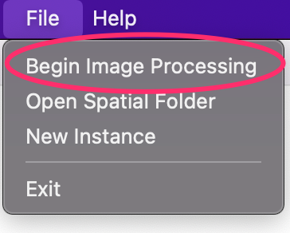
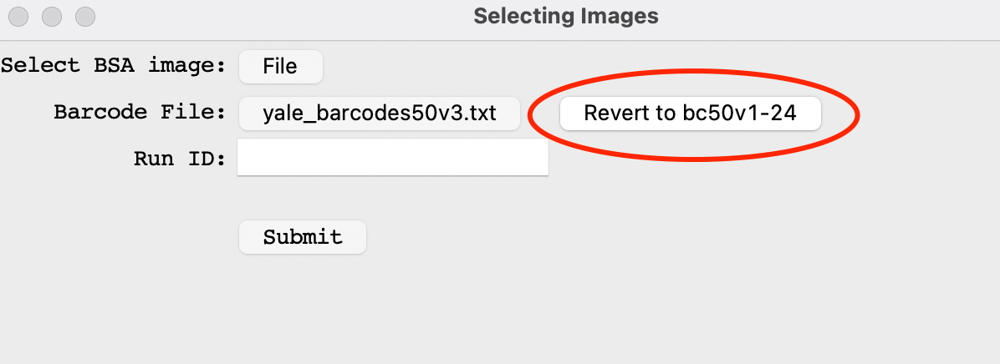

An important step in the image processing done by AtlasXbrowser, is the location of the ROI (Region of Interest) of the image, corresponding to the section of tissue which the A and B chips overlap. This is made much easier by flowing Bovine Serum Albumin (BSA) solution mixed with
fluorescent dye through the outmost channels of both the A and B chips. These fluorescent colors will make it visually very
clear where the ROI is. As shown in the image below, the ROI is enclosed by this colored square.
Note: We reccomend using two different colors of fluorescent dye on each chip to ensure the image is in correct orientation.
The two images required for processing are the BSA and postB images. These can be taken following the removal of the B chip.
BSA Image: Image taken using the epifluorescence setting of the microscope.
postB Image: Image taken using the brightfield setting of the microscope.
(Left) The postB image, (Right) the BSA image. Notice how they are the same underlying image. Also note in the
BSA image how the fluorescent staining of two different colors allows for easy identification of proper orientation
following any rotations that may occur from this point on.
To use AtlasXbrowser for image processing, a proper image folder must be prepared.
The folder to be used in the Browser must contain both the BSA Image and the postB Image.
While these files can be named whatever the user wants, they two images must be stored within the same folder, we highly reccomend creating a
new folder pertaining this particular run which will store these two images, and the relevant folders and files generated by AtlasXbrowser.
See above how a new folder was created, storing the BSA (D223_postB_BSA.TIF) and postB (D223_postB.TIF) images to be used by AtlasXbrowser.
In order to begin processing the tissue image, the first step is to load the relevant images.
Navigate to the File tab in the top left corner of the screen.
Select “Begin Image Processing”.

Once selected a pop-up window should appear on screen.
1.) Select File in the first row of the pop-up titled, “Select BSA Image”. Then navigate to the directory
of the image folder, and select the BSA image.
2.) Select File in the second row, labeled “Select postB Image”. Navigate to the image folder, and select the postB image.
3.) This button is used to select a custom barcode file. Automatically the default of the bc50v1 barcode file is selected. To Change this, select the button and navigate to the desired custom barcode file.

Upon selecting a custom barcode file, if the user wants to revert to the default bc50v1 file, they can select the Revert to bc50v1 circled above.
4.) Enter the desired name of the run (or data set) in the textbox.
5.) Once the images have been loaded in without error, and the run ID entered, select Submit to continue with the image processing.
Upon selecting Submit, the popup should dissapear and the BSA image should be loaded into the main window of the Browser.
This metadata will be saved and stored in the associated Spatial Folder for this experiment. Now we can proceed to configuring the image.